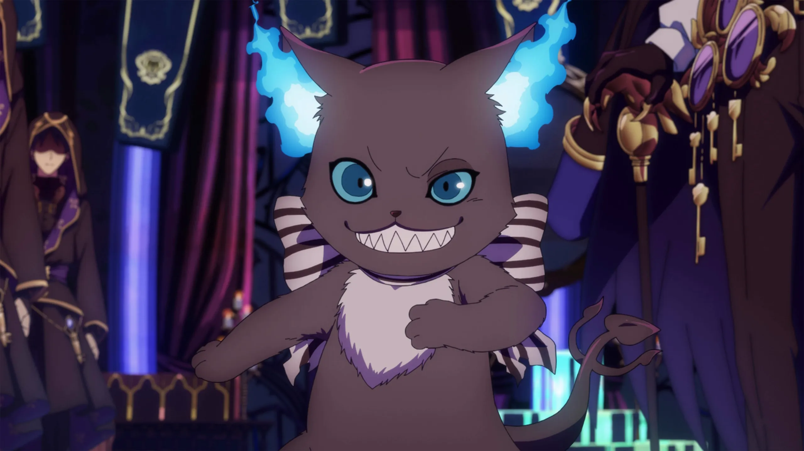
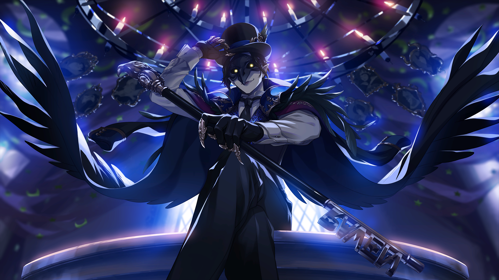

Yuu (the player) is summoned to another world by a magic mirror and arrives at the magic training school, Night Raven College. Yuu has no recollection of how they were summoned there and is unable to be sent back to their original world. Through the antics of a fire-breathing magic cat monster named Grim, Yuu receives a small demonstration of the abilities some people in this new world possess. Due to having nowhere else to go, Yuu is forced to stay at Night Raven College and act as an errand boy/janitor until the headmaster, Dire Crowley, can find a way to send them home. Crowley graciously allows them to live in the haunted and run-down dormitory on the edge of campus, now called the Ramshackle Dorm. After fighting some local ghosts and being evaluated by Crowley, Yuu and Grim are allowed to stay in the dorm.
Grim and Yuu encounter Ace Trappola and Deuce Spade, who give them a rundown on the ordering of the school dorms. Due to Grim's antics, an expensive magical chandelier breaks during a fight, resulting in the group being told to leave the school. However, they are told that if they go on a quest to retrieve a replacement mage stone for the chandelier in order to fix their mistake, their ban would be rescinded. They visit an abandoned mine to find one and are attacked by a monster covered in an ink-like substance called "blot". The group fights the monster for the stone, and Yuu discovers that they are able to get normally uncooperative students to work together. As these talents would be of a huge help to Night Raven College, filled with headstrong students unwilling to work in teams, Crowley asks the player to become a joint-student of the school, sharing their enrollment spot with Grim.
This text was written on Wikipedia. All images are from the game and anime. No AI was used to make this webpage.